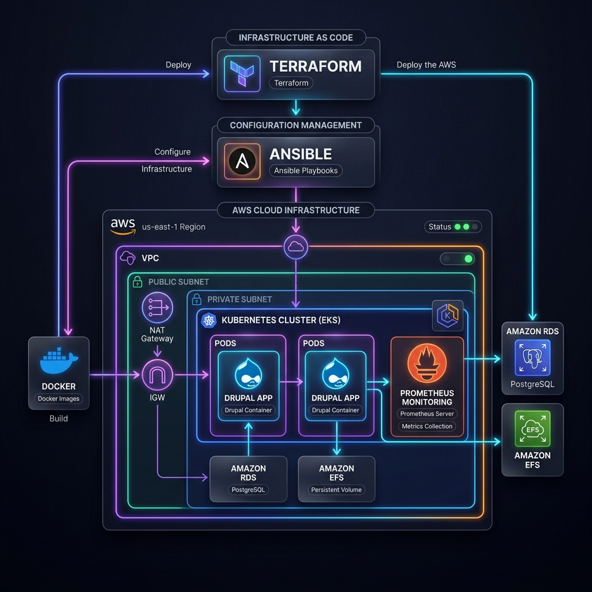
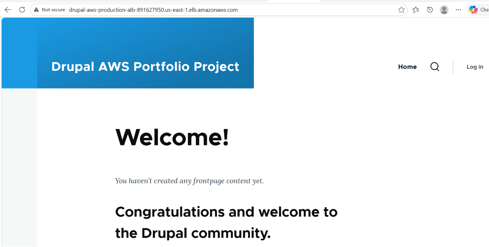
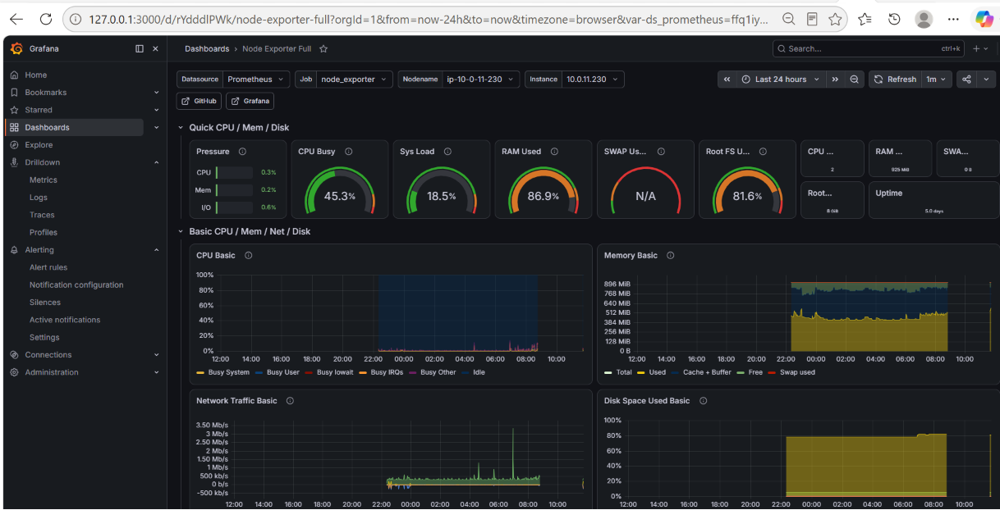
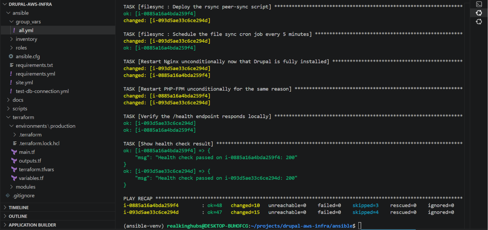
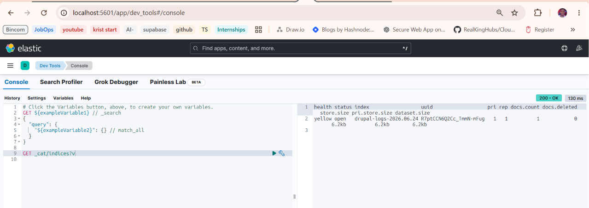
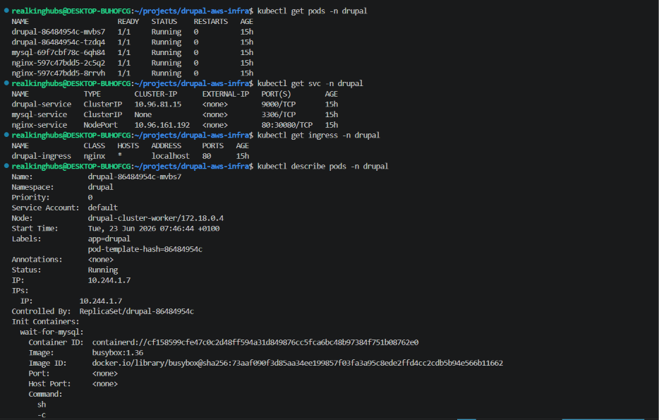
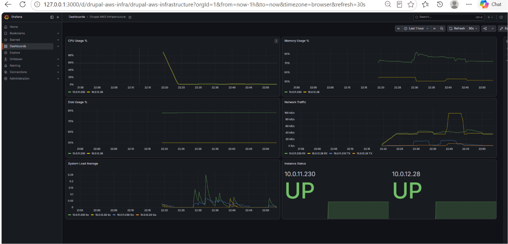

Production-Grade Drupal Platform on AWS with Full DevOps Automation







Production-grade Drupal 11 platform on AWS using a complete DevOps toolchain, featuring Terraform IaC, secure Ansible deployment via SSM, Kubernetes orchestration, and automated GitHub Actions OIDC CI/CD.
I built a production-grade Drupal 11 platform on AWS using a complete DevOps toolchain, with infrastructure automation, secure deployments, monitoring, and centralized logging.
The problem I solved was the complexity of managing a highly available web application across multiple servers while maintaining security, automation, and operational visibility. Traditional environments often rely on manual configuration, SSH access, and inconsistent deployment processes, which increase risk and maintenance effort.
I provisioned the entire AWS environment using Terraform, including a multi-AZ VPC, Auto Scaling Group, Application Load Balancer, RDS MySQL with a read replica, S3 storage, and CloudWatch billing alerts. Everything was deployed through code with no manual infrastructure setup.
For server management, I used Ansible with AWS Systems Manager instead of SSH. This removed the need for SSH keys, bastion hosts, and public access to servers. All configuration and deployments were performed through secure SSM connections.
I containerized Drupal using Docker and deployed it to a Kubernetes cluster for local orchestration and testing. The platform included persistent storage, Kubernetes deployments, services, ingress routing, secrets management, and horizontal pod autoscaling.
To automate releases, I built a GitHub Actions CI/CD pipeline using OIDC authentication. This removed the need for long-lived AWS credentials. Every code change automatically triggers image builds, testing, staging deployment, smoke tests, and production deployment with an approval gate.
I also implemented full observability using Prometheus, Grafana, and the ELK Stack. Metrics from EC2, Nginx, RDS, and the load balancer were collected and visualized through Grafana dashboards, while centralized log aggregation made troubleshooting faster and easier.
The platform was designed for high availability and resilience. It runs across two availability zones, automatically replaces failed instances, scales based on CPU utilization, and includes health checks, monitoring alerts, and database redundancy.
This project improved security, automated infrastructure management, reduced deployment effort, and provided complete visibility into application and infrastructure health.
Key Benefits
- Fully automated infrastructure provisioning with Terraform
- No SSH access or stored credentials through AWS SSM and GitHub OIDC
- Automated CI/CD pipeline with testing, staging, and production approval flow
- High availability across multiple AWS Availability Zones
- Auto Scaling for increased traffic and workload demand
- Centralized monitoring with Prometheus and Grafana
- Centralized logging with ELK Stack and Filebeat
- Secure network segmentation and least-privilege IAM design
- Faster troubleshooting through real-time metrics and log analysis
- Complete Infrastructure as Code and configuration management approach